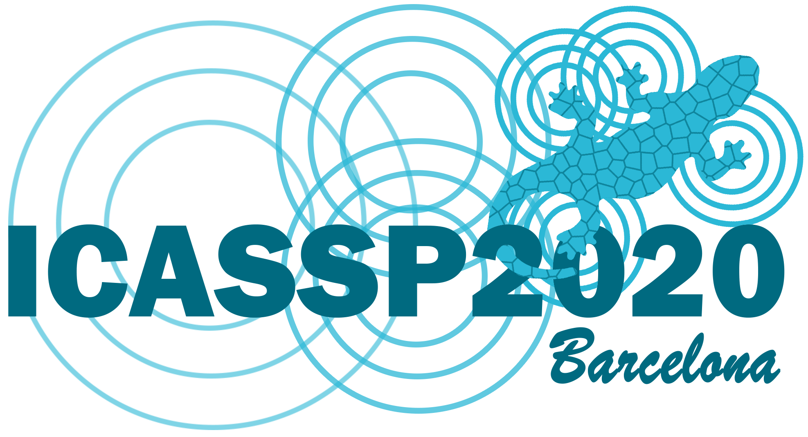

|
Goutam Yelluru Gopal I am a PhD student at the VidPro Group, Dept. of Electrical and Computer Engineering, Concordia University. My main research interest lies at the intersection of Computer Vision and Machine Learning, especially towards designing lightweight, robust algorithms for Visual Object Tracking. I hold an MSc Degree in Computer Science from Saarland University, with specialization in Machine Learning. I did my Masters Thesis at the Machine Learning Group on tackling Algorithmic Bias in binary classifiers. Email / Google Scholar / Github / LinkedIn / CV |
{kind=link}
News |
ResearchI'm interested in computer vision, machine learning, deep learning, and optimization. |
|
Separable Self and Mixed Attention Transformers for Efficient Object
Tracking
Goutam Yelluru Gopal, Maria Amer, IEEE/CVF Winter Conference on Applications of Computer Vision (WACV), 2024 (to appear) arXiv / code Transformer-based models are under-utilized for tracking due to the computational complexity of their attention blocks. This paper proposes an efficient self and mixed attention transformer-based architecture for lightweight tracking. Simulations show that our SMAT tracker surpasses the performance of related lightweight trackers on GOT10k, TrackingNet, LaSOT, NfS30, UAV123, and AVisT datasets, while running at 37 fps on CPU and 158 fps on GPU. |
|
|
Mobile Vision Transformer-based Visual Object Tracking
Goutam Yelluru Gopal, Maria Amer, The 34th British Machine Vision Conference (BMVC), 2023 (to appear) paper / arXiv / code / poster / video The state-of-the-art Vision Transformer-based trackers are computationally expensive since they have a large number of model parameters and rely on specialized hardware (e.g., GPU) for faster inference. We propose a lightweight, accurate, and fast tracking algorithm using Mobile Vision Transformers (MobileViT) as the backbone for the first time, along with a novel approach to fuse the template and search region representations in the MobileViT backbone. |
|
|
Reliable interconnected channels for dynamic DCF based visual
tracking
Goutam Yelluru Gopal, Maria Amer, Springer's Multimedia Tools and Application (MTAP), 2023 In DCF-based trackers, several non-discriminative or unreliable channels display ambiguous filter responses due to the effect of various external factors. We address this problem by proposing a three-fold objective function that accounts for the relationship between channels along with per-channel reliability scores during channel weight learning and a temporal prior. In addition, we present an algorithm to compute channel weights efficiently and maintain the tracking speed. |
|
|
Reliable Temporally Consistent Feature Adaptation for Visual Object
Tracking
Goutam Yelluru Gopal, Maria Amer 27th IEEE International Conference on Image Processing (ICIP), 2020 Use of multiple features and sophisticated learning methods have increased the accuracy of DCF-based tracking results. However, unreliable features lead to erroneous target localization and lead to tracking failures. To alleviate this problem, we propose a method for online adaptation of feature weights based on their reliability. Our objective is modeled as a convex optimization problem for robust learning of feature weights. |
|
|  |
Dynamic Channel Pruning For Correlation Filter Based Object Tracking
Goutam Yelluru Gopal, Maria Amer 45th IEEE International Conference on Acoustics, Speech, and Signal Processing (ICASSP) , 2020 In DCF-based tracking, not all channels contain useful information for target localization. During challenging scenarios, non-discriminative channels lead to erroneous tracker. To mitigate this problem, we propose a method for dynamic channel pruning. The proposed method for learning of channel weights is modeled as a non-smooth convex optimization problem. We also propose an algorithm to solve the resulting problem efficiently compared to off-the-shelf solvers. |
|
Feel free to steal this website's source code. Do not scrape the HTML from this page itself, as it includes analytics tags that you do not want on your own website use the github code instead. |